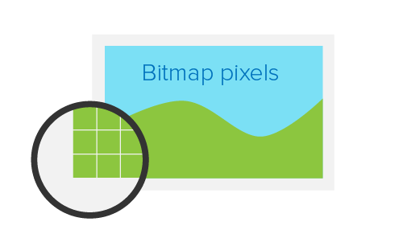

Плотность пикселей
Retina-дисплей (ретина) - маркетинговый термин компании Apple, описывающий устройства с экранами повышенной пиксельной плотности. В тот же размер экрана вмещается больше физических пикселей, за счёт того что их размер меньше. Это повышает качество и чёткость изображения, делает цвета более насыщенными и живыми.

Физические пиксели
Физические пиксели (device pixel или hardware pixel) - самые маленькие элементы любого экрана (его матрицы), каждый из которых имеет свой цвет и яркость.
Разрешение экрана (screen resolution) - это количество физических пикселей
на экране устройства. Например, разрешение 1920x1080 означает что экран 1920
физических пикселей по ширине и 1080 по высоте. Если умножить получится общее
количество пикселей на таком экране - 2073600.
Плотность экрана (pixel density) - это количество физических пикселей,
которое помещается в один дюйм. Измеряется в ppi (pixels per inch). Чем выше
плотность, тем меньше размер пикселя и тем больше их на экране.
CSS-пиксели
CSS-пиксели (device-independent pixels) - абстрактная величина не зависящая от экрана устройства и используемая браузером для рассчёта размеров контента на странице.
На обычных экранах один CSS-пиксель соответствует одному физическому пикселю устройства. При масштабировании и на экранах высокой пиксельной плотности, в одном CSS-пикселе может помещаться больше одного физического пикселя.
Например, есть блок размером 2x2 пикселя. Все размеры элементов, которые
указываются в CSS или HTML, это CSS-пиксели.
div {
width: 2px;
height: 2px;
}
На обычных экранах он будет занимать область 2x2 физических пикселя, а на
Retina-экранах, например с плотностью 2, этот же блок получит 4x4 физических
пикселя. То есть в два раза больше по горизонтали и вертикали. Таким образом, на
Retina-экранах с плотностью пикселей в два раза выше стандартной, количество
пикселей в 4 раза больше, чем на обычных.
Растровые пиксели
Растровые пиксели (bitmap pixels) - самые маленькие части, составляющие растровое изображение (png, jpg, gif и т. д.). Каждый пиксель содержит информацию о своём цвете и расположении в системе координат изображения.
В коде размеры изображения задаются в CSS-пикселях. При отображении на обычном
экране, один растровый пиксель соответствует одному CSS-пикселю. На
Retina-экранах с плотностью 2, каждый растровый пиксель умножается в 4 раза,
что приводит к потере качества изображения не подготовленного к ретине.
Именно поэтому растровые изображения для Retina-экранов должны иметь большее количество пикселей. Это гарантирует их чёткость при отображении в браузере.
Ретинизация графики
Для Retina-экранов необходимы специально подготовленные ресурсы. Текст и векторная графика (SVG) отображаются одинаково хорошо на любом экране, так как их рендерит сам браузер по набору точек и соединяющих их кривых. Ретинизация - это приём для подготовки растровой графики.
Для того чтобы подготовить растровую графику к ретине, небходимо экспортировать
из макета большее изображение. Например, чтобы показать фотографию 200x300
CSS-пикселей на экране с плотностью 2, необходимо подготовить её вариант в
размере 400x600 растровых пикселей. Для экрана с плотностью 3 это
изображение должно быть 600x900 растровых пикселей.
Для растровой веб-графики достаточно подготовить только 1x и 2x версии.
Большинство людей с хорошим зрением не заметят разницу между 2x и 3x
изображением, из-за физических ограничений человеческого глаза, но вес
последнего будет значительно больше, что негативно скажется на скорости его
загрузки.
Процесс подготовки состоит из экспорта изображений в N-раз больше размера
оригинала и сохранения их с соответствующими префиксами @2x и @3x. Для
оригинала префикс не нужен.
После чего достаточно задать нужный размер тегу <img> в HTML или CSS коде.
<img src="icon.png" width="200" height="300" />
<img src="[email protected]" width="200" height="300" />
<img src="[email protected]" width="200" height="300" />
В примере используется онлайн-сервис изображений. Загружается три картинки
320x240 (1x), 640x480 (2x) и 960x720 (3x) пикселей. Размер всех элементов
<img> одинаковый - 320x240 CSS-пикселей. Если перейти в пример с телефона
или просто увеличить масштаб страницы с примером, будет заметно что первое
изображения сильно размывается, второе остаётся вполне качественным, а третье
всегда кристально чёткое.
Это не значит что всегда нужно экспортировать и загружать самое большое изображение. На этом шаге мы рассмотрели проблему и научились делать ретинизацию растровой графики. Дальше мы научимся загружать различные изображения под каждую ширину или плотность экрана.